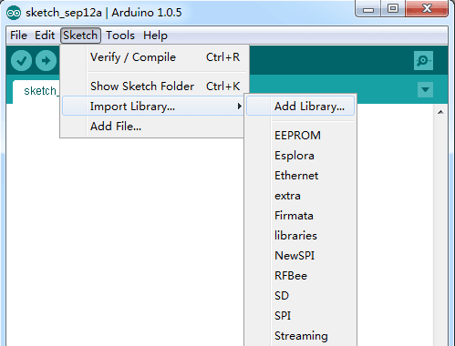
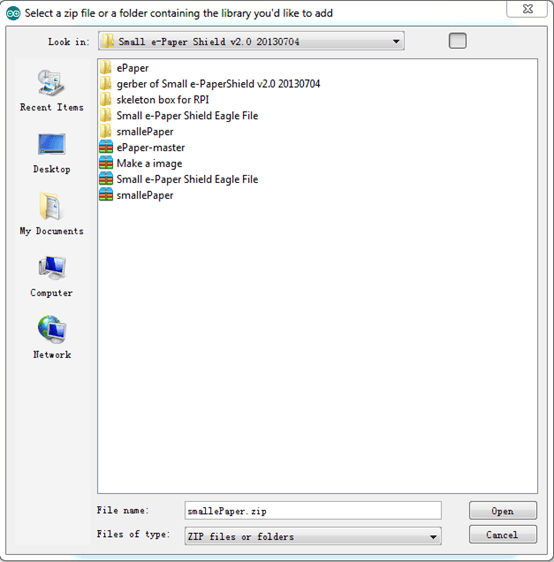
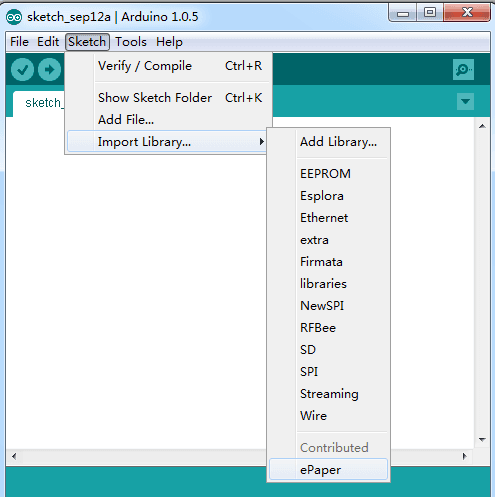
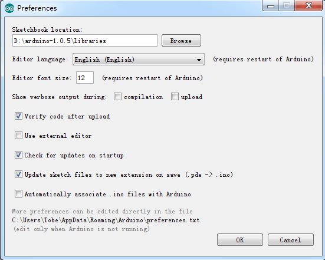

How to install Arduino Library
Once you are comfortable with the Arduino software, you may want to extend the library to meet your requirement.
Libraries are often distributed as a ZIP file or folder. The name of the folder is the name of the library. Inside the folder will be a .cpp file, a .h file and often a keywords.txt file, examples folder, and other files required by the library.
Take Arduino1.0.5 as example, you can install a library in Arduino IDE. And Do not unzip the downloaded library, leave it as is.
- In the Arduino IDE, click Skietch->Import Library. At the top of the drop down list, select the option to "Add Library.

- You will be prompted to select the library you would like to add. Find the .zip file's location and open it. Here I select a library named smallePaper .

- Return to the Sketch > Import Library menu. You should now see the library at the bottom of the drop-down menu. It is ready to be used in your sketch.

- Now the zip file has been installed in your Arduino sketches directory. You can see the location of the library: File->Preferences->Sketchbook location, and can change the location. Generally, we will change it as ….Arduino – 1.0.5\libraries as showing below.

Copyright (c) 2008-2016 Seeed Development Limited (
www.seeedstudio.com /
www.seeed.cc)
This static html page was created from http://www.seeedstudio.com/wiki